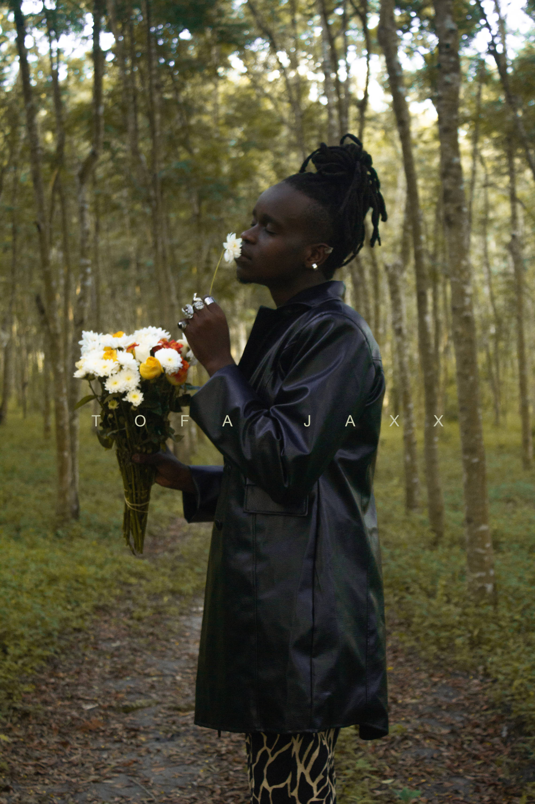
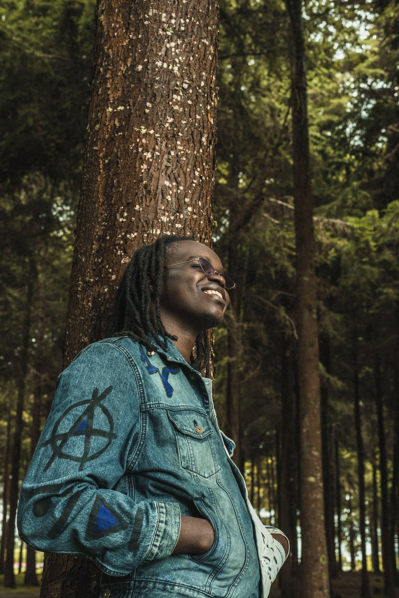
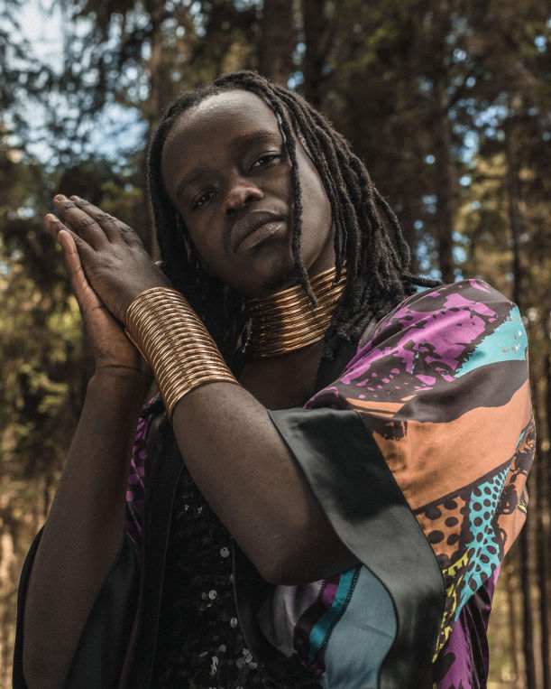

smokey, unique and mysterious voice carries the musical genres RnB, Neo Soul, Jazz and Reggae perfectly just as a dhow sailing through millions of diamond splinters into a sunset in the Indian Ocean.
Tofa Jaxx is an emerging singer-songwriter and notable live performer from Tanzania. In 2015 while still in college, Tofa participated in the international singing competition “Airtel Trace Star” that he ended up taking the fourth place. A year later he decided to drop out of IT college and follow his dreams of becoming a singer-songwriter.
One among his very first attempts as an aspiring singer-songwriter was to participate in a 4 days musician’s boot-camp in Zanzibar, held at the Red Monkey Hotel. This was the platform that launched the artist he is today, followed by a series of live shows he did in Zanzibar and Dar Es Salaam.
In 2016 he was the opening act for Grammy Winning Artist Joss Stone at one of her “The Total World Tour” concerts in Zanzibar. He also performed live with the Dhow Countries Music Academy band at one of the largest cultural events in East Africa “Zanzibar Film Festival” .
GOETHE institute headquarters in Munich selected him and other 7 artists from all around the world to participate in a Musician’s Bootcamp in Berlin, Germany which was coordinated by “Music Board Berlin” for the Pop-Kultur Nachwuchs.
His first release “I Want You” (Produced by Victor The Traveler) was nominated for Best RnB and Soul Song from An East African Artist by the AFRIMA (afrima.org) in 2017. This was followed by two more releases he made in the same year, “A Guy Like Me” and “Puff Puff” available on all digital platforms.
From September 2017 to February 2018 during his stay in London, Tofa worked with other musicians, producers and artists like the Dance/Electronic Producer Duo Tru Fonix, Tara Priya and D.Knights who produced his single “Go Away” also available on all digital platforms.
In the beginning of 2020 to the current year of 2022, he’s released a 7 track EP “Middle 8” and his first official music video “MINE” together with “Changed The Game” a soundtrack he wrote and sang for the Tanzanian action film “Nyara”.
Followed by “Mozizi'' a soundtrack he wrote and performed for award winning “Mozizi” animated film by Tanzania’s giant film house Kijiweni Productions for an Antimalaria campaign. And many more music videos and songs from the electro swahili pop “Umenikaa” to the sad sensual ballad “Restart” which came with a HIV/AIDs awareness campaign and raised funds donated to a HIV research centre in Tanzania in partnership with the Spanish Embassy Dar Es Salaam.
2016 - opening act for Grammy Winning Artist Joss Stone
2022 - Showcase at Tallinn Music Week, Estonia.